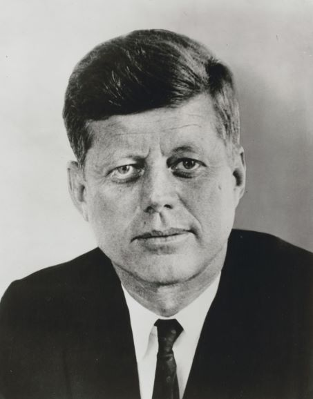

John F. Kennedy

Lackeen Castle, in the heart of Ireland, was built nearly 1000 years ago and is still standing today. You can climb to the top and look out over the green fields of North Tipperary.
The castle has some interesting features to deter invaders. Click here to find out more.
This tower house was built by the O'Kennedy family, who trace their roots to Brian Ború, high king of Ireland and count John F. Kennedy, 35th US President, as a descendant.
A priceless family prayer book- the Stowe Missal ~ a manuscript of national importance, was found hidden in the castle walls 300 years ago in a magnificently ornate storage box.
You tend to find the O' Kennedy family front and centre of politics and the arts wherever they live. The Kennedy dynasty are an American 20th century phenomenon, rising to the Presidency. Eunice Kennedy Shriver is founder and patron of the Special Olympics.
Kennedys of note in Ireland are Mary and Sinead Kennedy, RTE broadcasters, and Dermot Kennedy, uber-popular Dublin singer/songwriter.
From Dublin, take M7 (south). From Shannon, take M7 (East).
Nearest stations are Nenagh and Roscrea.
From Athlone, follow the L236 to Limerick.